Babusya's First Sats
Babusya is 81 and has never trusted a bank. For her birthday her grandson gives her a little green card. She thinks it's a lottery ticket. By lunch the next day, half the market is taking Bitcoin Cash.
The people
Three characters, one style. Everything is set in 2026: modern clothes, modern phones, a real farmers' market.
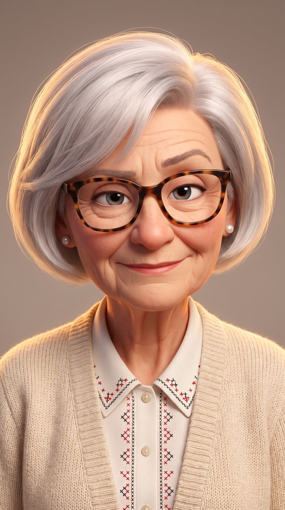
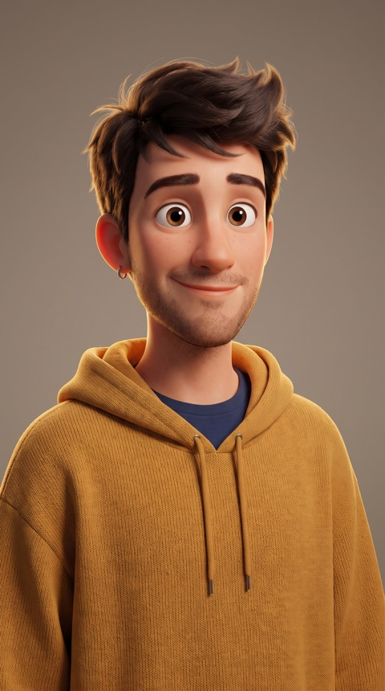
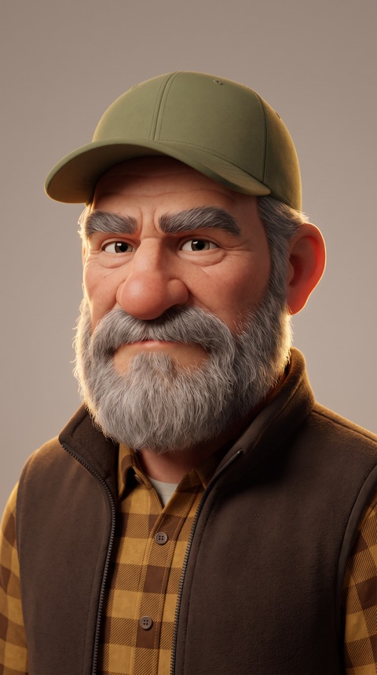
The story in 17 frames
Each frame is the end of one shot and the start of the next, so the animation can run as one chain. One hard cut: from the kitchen in the evening to the market the next morning.
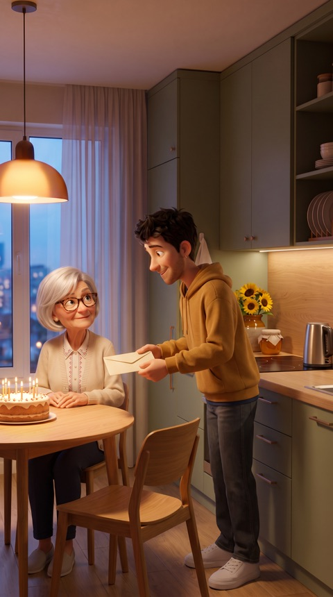
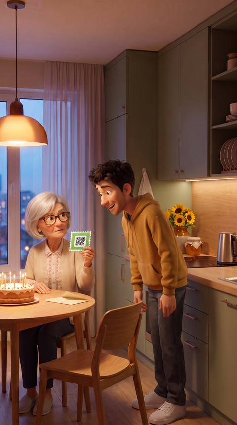
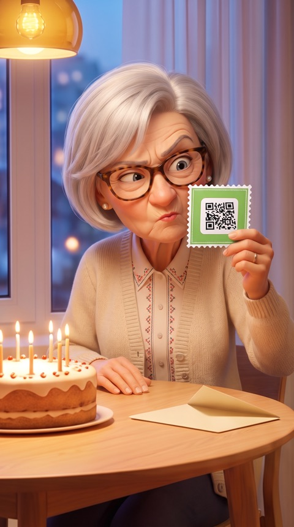
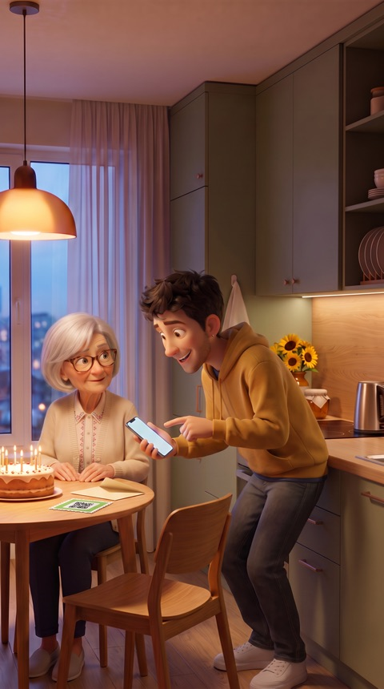
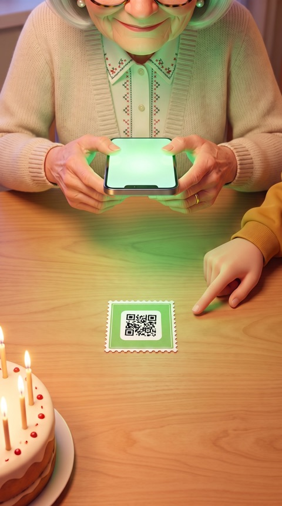
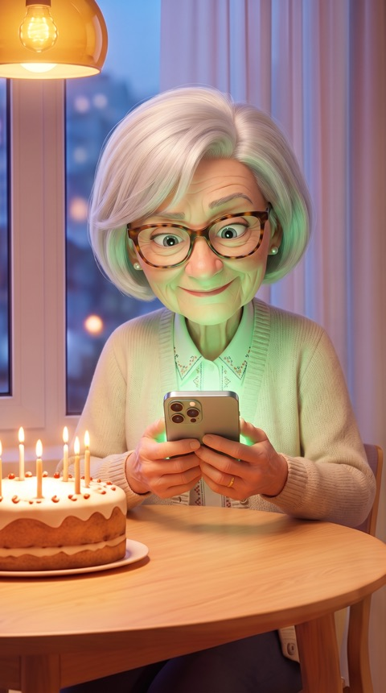
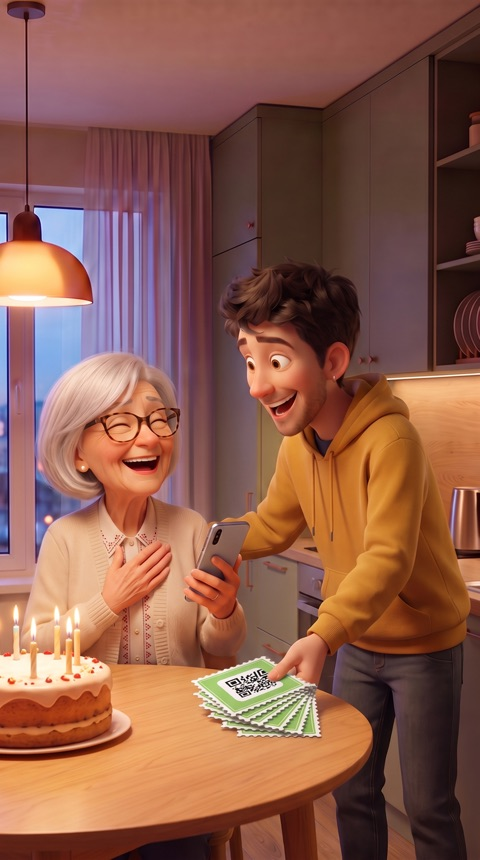
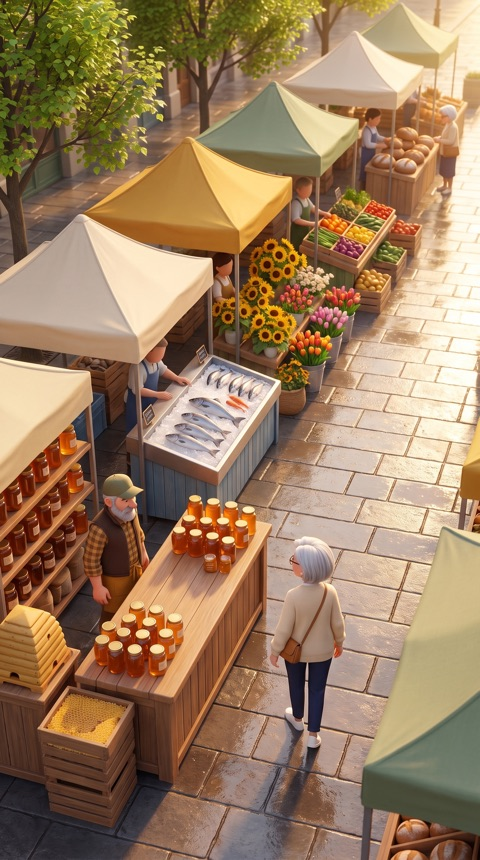
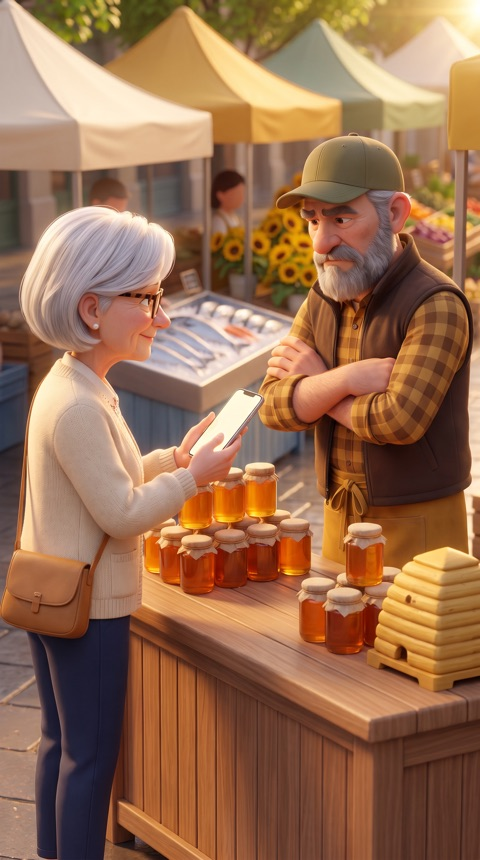
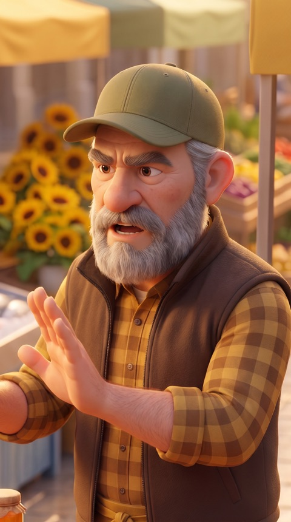
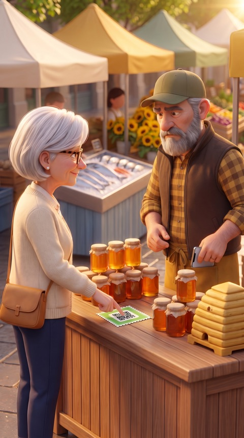
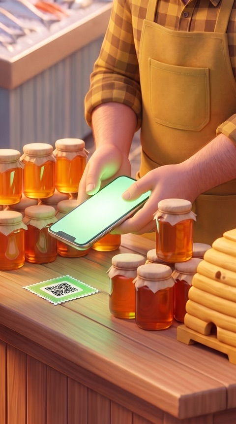
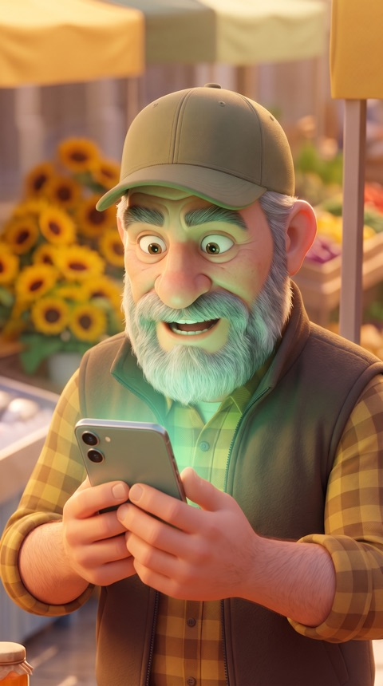
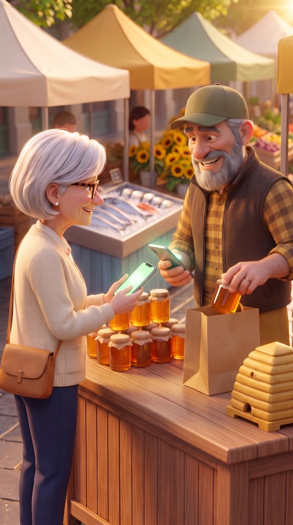
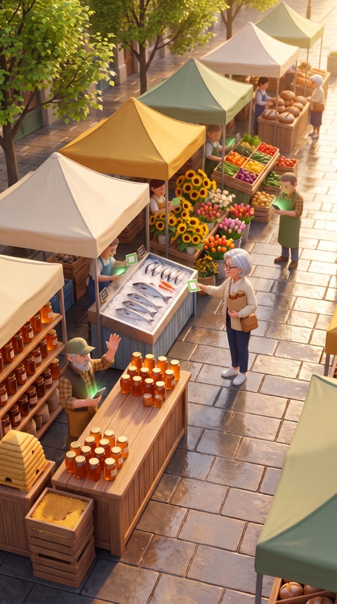
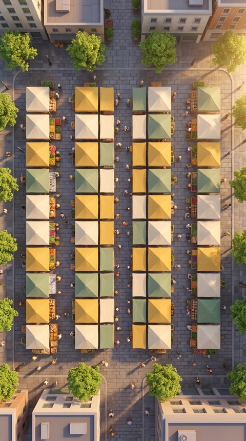
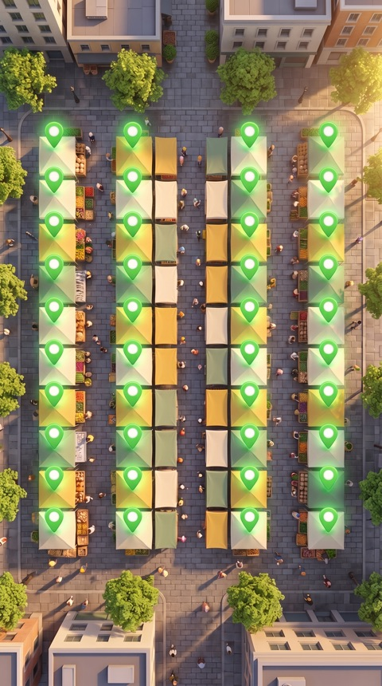
The script
Voice-over by the grandson. Burned-in subtitles, because most people watch on mute.
| Time | Picture | Voice |
|---|---|---|
| 0:00 | Birthday cake. She opens an envelope, a green card falls out. | "My grandma has never trusted a bank." |
| 0:05 | She holds the card up to her glasses and squints. | "So for her birthday, I gave her this. She thought it was a lottery ticket." |
| 0:10 | He installs the wallet for her. She scans the card herself. Ding. | "One free app. One scan. No bank. No paperwork." |
| 0:17 | A slow smile. He puts a stack of cards in front of her. | "Then I gave her a few more. For her friends." |
| 0:21 | Next morning. The beekeeper shakes his head. | "Next morning, the honey guy said: cash only." |
| 0:25 | She puts a card on his counter. He scans it. Ding. Eyebrows up. | "She made him install the app. Then scan." |
| 0:32 | Green cards travel from stall to stall. | "By lunch, half the market had a wallet." |
| 0:36 | She pays phone to phone. He bags a jar of honey. | "Fee? Less than a cent." |
| 0:41 | The camera rises over the market. Every stall glows green. | "Bitcoin Cash. Even for Babusya." |
What happens in the 8 days
Judged on the difference between this page and the finished one, so here is the line between them.
Ready on 14 Nov
- Script and voice lines
- Storyboard, 16 chained key frames
- Three characters, market and kitchen
- Shot list with camera moves
Made 14 to 22 Nov
- All 15 animated shots
- Voice-over and two character lines
- Music and the wallet "ding"
- Wallet screens, subtitles, edit
- The 45-second film, 9:16 and 16:9
- Three 15-second cuts for social
Storyboard sheets
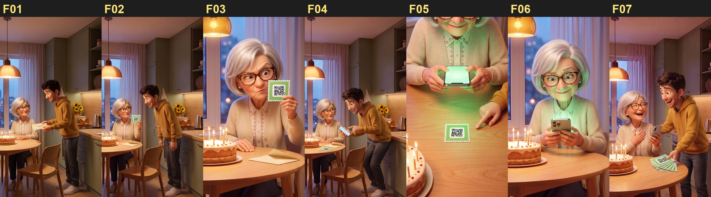
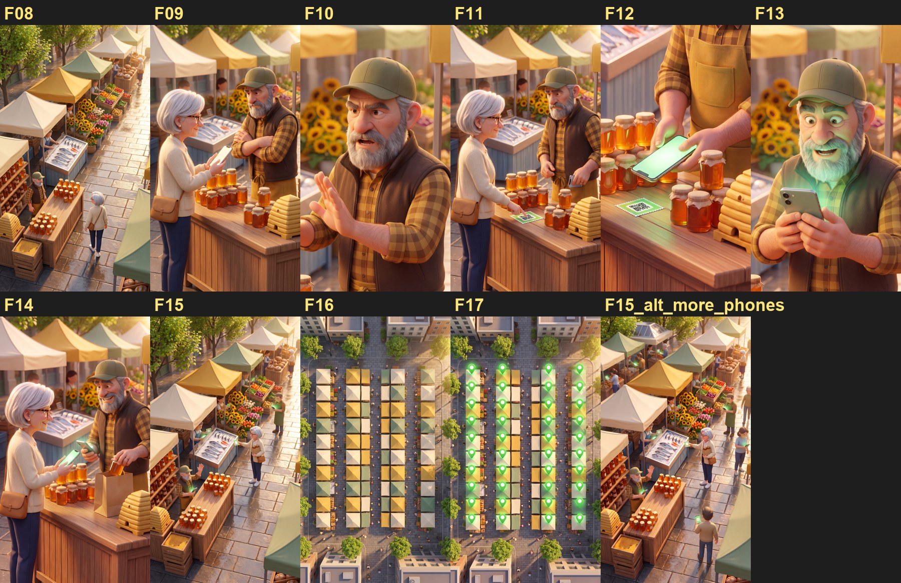
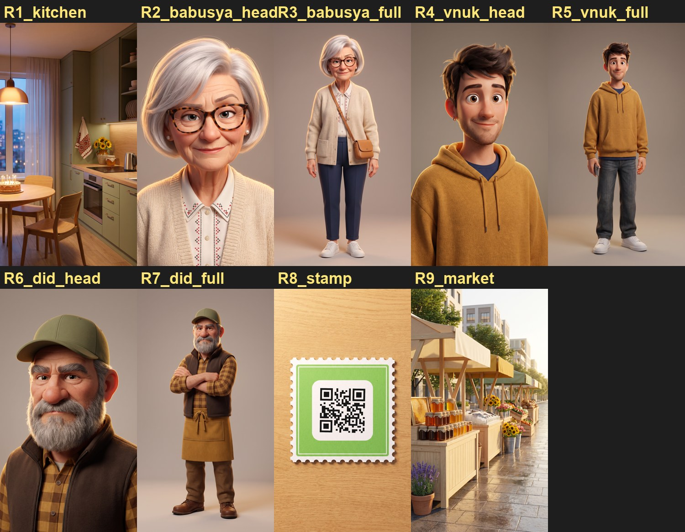